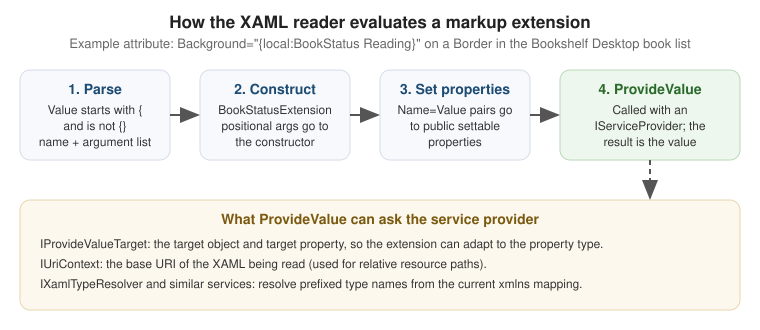
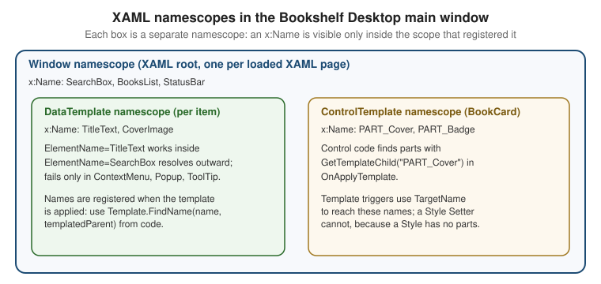

Markup Extensions & Namescopes
|
This content was generated with the assistance of AI and should be verified against the official documentation before being relied on in production. |
A markup extension is the part of XAML that lets an attribute value be something other than a literal string:
a binding, a reference to a resource, a static field, a type. Everything written between curly braces in an
attribute is a markup extension, and almost every non-trivial WPF page uses a dozen of them. A namescope is the
other half of the story: the set of x:Name values that can see each other, which is what makes
ElementName=SearchBox work in one place and silently fail in another. This page explains both, using the
Bookshelf Desktop scenario (a WPF client with a BooksViewModel, an IBookRepository and an IDialogService).
The page is written against the section baseline: .NET 10 LTS (latest patch 10.0.13), C# 14,
Visual Studio 2026 18.11.1, CommunityToolkit.Mvvm 8.4.2 and Windows App SDK 2.5.1 for the WinUI 3
comparisons. .NET 11 is at release candidate 2 (GA is expected at .NET Conf, 10-13 November 2026) and does not
change anything described here. WPF runs on Windows 10 and Windows 11; nothing on this page depends on the OS
version. The language itself (attributes, reflection) is covered on
Attributes and Reflection in the C# reference;
this page covers how XAML uses it. The broader XAML language (object elements, property elements, type converters,
xmlns mapping) is the subject of the page XAML Language Fundamentals in this section, and the differences between
WPF, WinUI and .NET MAUI XAML are on the page XAML Dialects: WPF, WinUI & MAUI.
How a Markup Extension Is Evaluated
The XAML reader treats an attribute value as a markup extension when it starts with { and does not start with
the escape sequence {}. It then reads the extension name, and the arguments that follow it, and builds a
.NET object:
| Part of the syntax | Meaning | Maps to in C# |
|---|---|---|
|
The first token is the extension name. The |
The extension class, created by the reader |
Positional argument ( |
An unnamed value, in order. |
A constructor parameter of the extension class |
Named argument ( |
|
A public settable property (or field) of the extension |
Nested extension ( |
An extension used as the value of a named argument. |
The nested object is produced first and then assigned |
|
Called last. |
The method that computes the real value for the target property |
Two consequences follow, and they explain most surprises.
-
The value assigned to the property is what
ProvideValuereturns, not the extension object. ForText="{Binding Title}"theBindingclass returns aBindingExpression; for{StaticResource X}it returns the resource itself. This is why a markup extension can return a different type from its own. -
Arguments are converted, then validated, by the reader. A positional or named argument that is not a markup extension is a string converted with the usual type-converter rules, so
Mode=TwoWaybecomes aBindingModevalue without quotes and without a prefix.
The figure shows the sequence for the custom extension written later on this page.

Positional Versus Named Arguments
A markup extension may support several constructors. The reader picks the constructor whose parameter count matches the number of positional arguments, so the two forms below are not interchangeable unless the class defines both a constructor and a settable property.
<!-- Positional: calls the constructor that takes one parameter. -->
<TextBlock Text="{x:Static local:BookshelfConstants.AppTitle}" />
<!-- Named: sets the Member property after the parameterless constructor. -->
<TextBlock Text="{x:Static Member=local:BookshelfConstants.AppTitle}" />
<!-- Binding mixes both: Path is positional, the rest are named. -->
<TextBox Text="{Binding SearchText, Mode=TwoWay, UpdateSourceTrigger=PropertyChanged, Delay=250}" />Source: Markup Extensions and WPF XAML
The official page lists which extensions are implemented in WPF and describes the syntax of the positional and named forms. It does not list the constructor overloads of each built-in class; those are in the API reference.
Markup Extensions Versus Type Converters
Both turn an attribute string into an object, and they are easy to confuse.
| Type converter | Markup extension | |
|---|---|---|
Trigger |
The target property type has a |
The value starts with |
Needs the extension syntax |
No ( |
Yes |
Can see the target object and property |
No |
Yes, through |
Can defer evaluation |
No |
Yes ( |
Typical use |
Parse a literal |
Look something up, bind, or compute |
The Built-In Extensions
The table lists every extension this page covers, with the namespace where the class lives and the typical use in Bookshelf Desktop.
| Extension | Evaluated | Typical use in Bookshelf Desktop |
|---|---|---|
|
Deferred, live |
Connect a control to |
|
Once, at load time |
Brushes and styles that never change at run time |
|
Deferred, re-evaluated when the resource changes |
Theme colours switched between light and dark |
|
Deferred, one way |
A property of a control read inside its own |
|
As part of a binding |
Reach the templated parent or an ancestor |
|
Once, at load time |
Constants, static properties, enum members |
|
Once, at load time |
|
|
Once |
Clear an inherited or default value |
|
Once, at load time |
Forward-reference a named element (XAML 2009, see below) |
Binding
Binding is the extension used for MVVM. It is a markup extension that returns a BindingExpression, so the
property keeps updating after the XAML is loaded. The sub-properties that matter most are:
| Property | Purpose |
|---|---|
|
Property path on the source ( |
|
|
|
Choose the source; with none of them the inherited |
|
When a |
|
Transform the value in either direction |
|
What to show when the binding fails or the source value is null |
|
Milliseconds to wait before updating the source (useful for a search box) |
|
Surface validation errors from the source |
<Window x:Class="Bookshelf.Desktop.MainWindow"
xmlns="http://schemas.microsoft.com/winfx/2006/xaml/presentation"
xmlns:x="http://schemas.microsoft.com/winfx/2006/xaml"
xmlns:d="http://schemas.microsoft.com/expression/blend/2008"
xmlns:mc="http://schemas.openxmlformats.org/markup-compatibility/2006"
xmlns:vm="clr-namespace:Bookshelf.Desktop.ViewModels"
mc:Ignorable="d"
d:DataContext="{d:DesignInstance Type=vm:BooksViewModel}"
Title="Bookshelf Desktop" Width="900" Height="560">
<!-- BooksViewModel has constructor dependencies, so the real DataContext is set in the
code-behind constructor from dependency injection; d:DataContext only types the bindings. -->
<DockPanel Margin="12">
<TextBox x:Name="SearchBox" DockPanel.Dock="Top" Margin="0,0,0,8"
Text="{Binding SearchText, UpdateSourceTrigger=PropertyChanged, Delay=250}" />
<ListView ItemsSource="{Binding Books}"
SelectedItem="{Binding SelectedBook, Mode=TwoWay}"
DisplayMemberPath="Title" />
</DockPanel>
</Window>Source: Binding declarations overview
The binding model itself (sources, converters, validation, collection views) belongs to the data-binding pages of
this section. The point here is only that Binding is a markup extension like any other.
StaticResource and DynamicResource
Both look a key up in a resource dictionary. The difference is when.
{StaticResource} |
{DynamicResource} |
|
|---|---|---|
Lookup time |
Once, while the XAML is loaded |
When first needed, and again whenever the resource is replaced |
Forward reference |
Not allowed: the key must be defined earlier in the file or in a dictionary already loaded |
Allowed |
Target property |
Any property |
Only a dependency property (or a |
Reacts to a changed resource |
No |
Yes |
Cost |
Cheapest |
A deferred reference per use |
Typical use |
Styles, converters, brushes that never change |
Theme brushes, system colours, user-selectable accent |
<Window.Resources>
<!-- Defined first: StaticResource needs it before use. -->
<local:BooleanToVisibilityConverter x:Key="BoolToVisibility" />
<SolidColorBrush x:Key="AccentBrush" Color="#0F6CBD" />
</Window.Resources>
<StackPanel>
<!-- Never changes: StaticResource. -->
<TextBlock Text="Bookshelf" Foreground="{StaticResource AccentBrush}" />
<!-- Replaced when the theme dictionary is swapped: DynamicResource. -->
<Border Background="{DynamicResource CardBackgroundBrush}">
<TextBlock Text="{Binding SelectedBook.Title}" />
</Border>
<TextBlock Text="Loading..."
Visibility="{Binding IsBusy, Converter={StaticResource BoolToVisibility}}" />
</StackPanel>Source: DynamicResource markup extension
The matching page for StaticResource is StaticResource markup extension.
Resource dictionaries, lookup order and merged dictionaries are covered in
XAML resources overview
and the dedicated page of this section.
TemplateBinding and RelativeSource
TemplateBinding is a lightweight, one-way binding that reads a property of the templated parent (the control that
owns the ControlTemplate). It is valid only inside a template. When you need two-way, a converter or a different
source, use the longer form {Binding RelativeSource={RelativeSource TemplatedParent}, ...}.
RelativeSource is itself a markup extension, used as the value of Binding.RelativeSource:
RelativeSource mode |
Meaning |
|---|---|
|
The target element itself |
|
The control the template is applied to |
|
The nearest ancestor of |
|
The previous data item in a list; used in data templates |
<Style x:Key="BookCardStyle" TargetType="{x:Type ContentControl}">
<Setter Property="Template">
<Setter.Value>
<ControlTemplate TargetType="{x:Type ContentControl}">
<Border Background="{TemplateBinding Background}"
BorderBrush="{TemplateBinding BorderBrush}"
BorderThickness="{TemplateBinding BorderThickness}"
Padding="{TemplateBinding Padding}"
CornerRadius="6">
<ContentPresenter />
</Border>
</ControlTemplate>
</Setter.Value>
</Setter>
</Style>
<!-- In a DataTemplate: reach the ListView's DataContext from each item. -->
<DataTemplate DataType="{x:Type vm:BookViewModel}">
<StackPanel Orientation="Horizontal">
<TextBlock Text="{Binding Title}" />
<Button Content="Remove" Margin="8,0,0,0"
Command="{Binding DataContext.RemoveBookCommand,
RelativeSource={RelativeSource AncestorType={x:Type ListView}}}"
CommandParameter="{Binding}" />
</StackPanel>
</DataTemplate>Source: Styles and templates
A ListView item’s DataContext is the book, so the command that removes it lives on the parent’s DataContext
(the BooksViewModel). FindAncestor is the standard way to reach it. Nested object-valued markup extensions can
be wrapped across lines in the XAML file; the XAML reader ignores whitespace between arguments.
x:Static, x:Type and x:Null
These three are XAML-language extensions rather than WPF classes. They are implemented by StaticExtension,
TypeExtension and NullExtension in System.Windows.Markup.
| Extension | What it returns | Notes |
|---|---|---|
|
A public static field, property, constant or enum member |
Evaluated once; the member is not observed, so a changing static property needs a binding with |
|
A |
Used for |
|
|
Clears a value that would otherwise be inherited or defaulted |
using System.Windows;
namespace Bookshelf.Desktop;
public static class BookshelfConstants
{
public const string AppTitle = "Bookshelf Desktop";
public const int MaxSearchResults = 200;
public static readonly Thickness CardMargin = new(0, 0, 0, 8);
}<Window xmlns:local="clr-namespace:Bookshelf.Desktop"
Title="{x:Static local:BookshelfConstants.AppTitle}">
<StackPanel>
<TextBlock Margin="{x:Static local:BookshelfConstants.CardMargin}"
Text="{x:Static local:BookshelfConstants.AppTitle}" />
<!-- Show an enum member without code-behind. -->
<ComboBox SelectedItem="{x:Static HorizontalAlignment.Stretch}" />
<!-- Remove a value inherited from a style. -->
<Button Content="Plain" Background="{x:Null}" />
</StackPanel>
</Window>Source: Markup Extensions and WPF XAML
x:Reference and the XAML 2009 Boundary
{x:Reference Name} returns the element with the given x:Name while the XAML is being loaded, and, unlike
ElementName in a binding, it can be used in any property. It belongs to XAML 2009, and the XAML services
documentation lists it with the other 2009 features. This is the honest state of the documentation:
-
The Microsoft Learn XAML services pages (XAML 2009 language features and XAML services) describe
ReferenceExtensionas part ofSystem.Xaml. -
The WPF documentation says that the XAML 2009 features work in loose XAML and are not available in the markup compiled by the WPF build. This page does not claim that
x:Referenceworks in an ordinaryWindoworUserControlof a WPF project; no WPF-specific Learn page shows it doing so. -
The section’s guidance is therefore to use
ElementName=...for bindings and anx:Nameplus code-behind or aRelativeSourcefor everything else, and to usex:Referenceonly where the XAML is loaded throughSystem.Xaml(for example throughXamlReaderin tooling).
Cross-Stack Comparison
| Concept | WPF | WinUI 3 (Windows App SDK) | Windows Forms |
|---|---|---|---|
Curly-brace markup extensions |
Yes, extensible |
Yes, with a smaller built-in set |
No XAML |
Binding to a view model |
|
|
|
Look up a resource |
|
|
Resource files and |
Static member |
|
Not covered by the pages cited here; see the WinUI documentation |
Direct C# access |
Type reference |
|
Not covered by the pages cited here; see the WinUI documentation |
Direct C# access |
Reach another element |
|
|
Field name in the designer class |
Custom markup extension |
Derive from |
Derive from the WinUI |
Not applicable |
The WinUI 3 column is summarised from the XAML dialects discussion of this section. Check the WinUI documentation for the exact members of the WinUI base class before copying the example below.
Escaping Braces
A value that begins with { is parsed as a markup extension, so a literal that starts with a brace needs an
escape. There are two.
| Technique | Example |
|---|---|
|
|
Backslash before the brace |
|
Anywhere other than the first character |
|
Element content instead of attribute |
|
<StackPanel>
<!-- Shows the literal text {Binding Title} in the help text. -->
<TextBlock Text="{}{Binding Title} shows the book title." />
<TextBlock Text="\{x:Static\} reads a static member." />
<!-- A string format containing braces needs the empty pair too. -->
<TextBlock Text="{Binding Price, StringFormat={}{0:C2}}" />
</StackPanel>Source: Markup Extensions and WPF XAML
The last line is the case that bites most often: StringFormat values that begin with { must be escaped with
{}, otherwise the reader tries to parse {0:C2} as an extension.
Writing a Custom Markup Extension
A custom extension is a class that derives from System.Windows.Markup.MarkupExtension and overrides
ProvideValue. WPF-specific parts are small:
| Element | Purpose |
|---|---|
|
Abstract base class (defined in |
|
Returns the value; the argument is the XAML reader service provider |
|
Tells tooling what type the extension returns |
|
Lets a serializer round-trip a positional constructor argument |
|
Service returning |
|
Service giving the base URI of the XAML being loaded |
A Localised-String Extension
The Bookshelf Desktop UI is English and Spanish. A small Loc extension replaces the verbose
{Binding Source={x:Static ...}, Path=...} idiom with {local:Loc BookList_Title}.
using System.Globalization;
using System.Resources;
using System.Windows.Markup;
namespace Bookshelf.Desktop.Markup;
[MarkupExtensionReturnType(typeof(string))]
public sealed class LocExtension : MarkupExtension
{
private static readonly ResourceManager Resources =
new("Bookshelf.Desktop.Properties.Strings", typeof(LocExtension).Assembly);
public LocExtension() { }
public LocExtension(string key) => Key = key;
[ConstructorArgument("key")]
public string? Key { get; set; }
public override object ProvideValue(IServiceProvider serviceProvider)
{
if (string.IsNullOrEmpty(Key))
{
throw new InvalidOperationException("Loc requires a resource key.");
}
// Look the key up with the current UI culture: English or Spanish.
return Resources.GetString(Key, CultureInfo.CurrentUICulture) ?? $"!{Key}!";
}
}<Window xmlns:mk="clr-namespace:Bookshelf.Desktop.Markup">
<StackPanel>
<TextBlock Text="{mk:Loc BookList_Title}" />
<Button Content="{mk:Loc Key=Action_Add}" Command="{Binding AddBookCommand}" />
</StackPanel>
</Window>Source: Markup Extensions and WPF XAML
The extension is evaluated once at load time, so a language change at run time needs a new Window. A binding to a
view model property that raises PropertyChanged is the alternative for live switching. The localisation pipeline
(.resx, satellite assemblies, x:Uid-like approaches) is outside the pages cited here; Microsoft Learn has no
WPF-specific page for a Resx markup extension, so this class is a user pattern, not an official API.
A Target-Aware Extension
IProvideValueTarget lets the same extension return a brush when assigned to Background and a string when
assigned to Text. The enum below is the Bookshelf Desktop reading status.
using System.Windows;
using System.Windows.Markup;
using System.Windows.Media;
namespace Bookshelf.Desktop.Markup;
public enum BookStatus
{
WantToRead,
Reading,
Finished,
}
[MarkupExtensionReturnType(typeof(object))]
public sealed class BookStatusExtension : MarkupExtension
{
public BookStatusExtension() { }
public BookStatusExtension(BookStatus status) => Status = status;
[ConstructorArgument("status")]
public BookStatus Status { get; set; }
public override object ProvideValue(IServiceProvider serviceProvider)
{
var target = serviceProvider.GetService(typeof(IProvideValueTarget)) as IProvideValueTarget;
// At design time or inside a Setter the target can be a SharedDp or null; fall back to the enum.
var propertyType = target?.TargetProperty switch
{
DependencyProperty dp => dp.PropertyType,
System.Reflection.PropertyInfo pi => pi.PropertyType,
_ => typeof(object),
};
if (typeof(Brush).IsAssignableFrom(propertyType))
{
return Status switch
{
BookStatus.Reading => Brushes.SteelBlue,
BookStatus.Finished => Brushes.SeaGreen,
_ => Brushes.Gray,
};
}
if (propertyType == typeof(string))
{
return Status.ToString();
}
return Status;
}
}<Border xmlns:mk="clr-namespace:Bookshelf.Desktop.Markup"
Background="{mk:BookStatus Reading}" Padding="6">
<TextBlock Text="{mk:BookStatus Status=Reading}" />
</Border>Source: Markup Extensions and WPF XAML
Design Rules for Custom Extensions
-
Fail loudly at load time. Throw a clear exception from
ProvideValuefor a missing key; the XAML reader wraps it in an exception that names the line. -
Return a type the property accepts. Returning the wrong type produces an unhelpful conversion error. If the target is a
Setter.Valueor a template,TargetPropertymay be null or a shared marker object, so tolerate that. -
Return
thisonly for a deferred extension. Returning the extension itself fromProvideValueis the mechanism by whichDynamicResourceExtensionhands the reader a placeholder; do not copy it unless you also handle the later evaluation. -
Keep it stateless. One extension instance is created per use in the XAML, but templates re-run
ProvideValuefor each template instance. -
Map the namespace with
clr-namespace:and, for a class in another assembly,;assembly=. The prefix is how XAML finds the extension class.
Changes From .NET Framework to .NET 8, 9 and 10
| Topic | Change |
|---|---|
Project type |
WPF is an SDK-style project with |
Custom extensions |
No source change in the class; the assembly must now target the |
|
Unchanged: XAML 2006 in compiled markup, XAML 2009 only in loose XAML |
Designer |
A custom extension defined in the same project is usually visible to the designer only after a build |
.NET 9 and later |
WPF gained an experimental Fluent theme ( |
XAML Namescopes
An x:Name (or the Name property of a framework element) registers an element under that name in the
namescope that contains it. Lookups by name (ElementName bindings, FindName, Storyboard.TargetName,
TargetName in template triggers) search only the current namescope. Names must be unique inside one namescope but
may repeat across namescopes.

Where a New Namescope Starts
| Construct | Namescope behaviour |
|---|---|
Root element of a XAML page ( |
Defines a namescope for everything it contains that is not inside a template |
|
Its content has a separate namescope, created for each instance when the template is applied |
|
A style has no element tree to name; |
Element created in code |
None until you call |
|
Not part of the element namescope; reach them with |
The separation works in one direction. Names declared inside a template are not visible from outside:
FindName("TitleText") on the window does not find them, which is why FrameworkTemplate.FindName exists. From inside a
DataTemplate, however, an ElementName=SearchBox binding does resolve, because the binding engine continues the
lookup in the namescope of the templated parent and so reaches the Window. The lookup fails where the element lives in
a separate tree, such as a ContextMenu, Popup or ToolTip; the usual fixes there are a RelativeSource binding,
binding through the DataContext, or exposing the value on the view model. The second diagram shows the lookup rule.
FindName, RegisterName and NameScope
| API | Purpose |
|---|---|
|
Finds an element by name in the namescope that contains this element |
|
Adds a name to the nearest namescope; required before a storyboard created in code can target the element |
|
Removes a name |
|
Reads or assigns the |
|
Interface implemented by |
|
Finds a name inside a template applied to the given templated parent |
|
Protected; used by a control in |
using System.Windows;
using System.Windows.Controls;
using System.Windows.Media;
using System.Windows.Media.Animation;
namespace Bookshelf.Desktop;
public partial class MainWindow : Window
{
public MainWindow()
{
InitializeComponent();
Loaded += (_, _) => PulseSearchBox();
}
private void PulseSearchBox()
{
// SearchBox is registered by InitializeComponent in the Window namescope.
var box = (TextBox)FindName("SearchBox");
// A storyboard built in code needs the target to be registered by name.
var brush = new SolidColorBrush(Colors.Transparent);
box.Background = brush;
RegisterName("SearchBrush", brush);
var animation = new ColorAnimation(Colors.LightYellow, TimeSpan.FromMilliseconds(400))
{
AutoReverse = true,
};
Storyboard.SetTargetName(animation, "SearchBrush");
Storyboard.SetTargetProperty(animation, new PropertyPath(SolidColorBrush.ColorProperty));
var storyboard = new Storyboard();
storyboard.Children.Add(animation);
storyboard.Begin(this);
}
private void OnBookSelected(object sender, SelectionChangedEventArgs e)
{
// Reach a named element inside a ListView item's template.
if (BooksList.ItemContainerGenerator.ContainerFromItem(BooksList.SelectedItem)
is ListViewItem item)
{
var presenter = FindVisualChild<ContentPresenter>(item);
var title = (TextBlock?)presenter?.ContentTemplate.FindName("TitleText", presenter);
title?.Focus();
}
}
private static T? FindVisualChild<T>(DependencyObject parent)
where T : DependencyObject
{
for (var i = 0; i < VisualTreeHelper.GetChildrenCount(parent); i++)
{
var child = VisualTreeHelper.GetChild(parent, i);
if (child is T match)
{
return match;
}
if (FindVisualChild<T>(child) is { } nested)
{
return nested;
}
}
return default;
}
}Source: WPF XAML namescopes
The BooksList field used above exists because x:Name="BooksList" on the ListView generates a field in the
partial class at build time. FindName("TitleText", presenter) works only after the item container has been
generated and its template applied.
Names in Templates and Custom Controls
Inside a template, names serve three purposes: TargetName of a trigger or setter, a target for a storyboard, and a
named part that control code finds with GetTemplateChild.
<ControlTemplate x:Key="BookCardTemplate" TargetType="{x:Type ContentControl}">
<Border x:Name="PART_Card" Background="{DynamicResource CardBackgroundBrush}" Padding="8">
<StackPanel>
<Image x:Name="PART_Cover" Width="64" Height="96" />
<ContentPresenter />
</StackPanel>
</Border>
<ControlTemplate.Triggers>
<Trigger Property="IsMouseOver" Value="True">
<Setter TargetName="PART_Card" Property="Background"
Value="{DynamicResource CardHoverBackgroundBrush}" />
</Trigger>
</ControlTemplate.Triggers>
</ControlTemplate>Source: Styles and templates
The PART_ prefix is a naming convention used by WPF controls. Control authors declare their parts with
TemplatePartAttribute; the control authoring overview describes it.
Namescopes Across the Stacks
| Concept | WPF | WinUI 3 | Windows Forms |
|---|---|---|---|
Name registration |
|
|
The designer generates a field on the form |
Search by name |
|
|
|
Names inside a template |
Separate scope per template instance |
Same idea; use |
Not applicable |
Programmatic scope control |
|
See the WinUI documentation; WPF-style scope APIs are not assumed |
Not applicable |
Pitfalls
-
ElementNamefails inside aContextMenu,PopuporToolTip. These are not in the visual tree of their owner and have their own namescope (aDataTemplateinside the window is not affected; itsElementNamelookups reach the window). Bind toPlacementTargetthroughRelativeSource={RelativeSource AncestorType=ContextMenu}, or expose the value on the view model. -
StaticResourcewith a forward reference. The key must be defined earlier; the error appears at load time and shows as a XAML parse exception. Switch toDynamicResourceonly if the target is a dependency property. -
DynamicResourceon a plain CLR property. It cannot be used on a property that is not a dependency property. UseStaticResourceor a binding. -
Missing braces escape. A
StringFormatthat starts with{needs the{}prefix. -
Unobserved
x:Static. The value is read once; to react to a change, bind to an object instead. -
Changing a name at run time. Do not rename an element after it is registered; call
UnregisterNamefirst. -
Custom extension assembly. If the extension is in the same project as the XAML, the designer may not show it until the project has been built once.
-
Duplicate names. Two elements with the same name in one namescope throw when the XAML is loaded.
What the Official Documentation Does Not Provide
-
There is no Microsoft Learn page that shows
x:Referencein a compiled WPF page; see the XAML 2009 boundary above. -
There is no official WPF page for a localisation markup extension such as
LocorResx; the examples are user patterns built on the documentedMarkupExtensionclass. -
The WinUI 3 column of the comparison tables is summarised from the Windows App SDK documentation. This page does not provide a WinUI custom-markup-extension tutorial.
-
Third-party libraries that offer ready-made markup extensions (for localisation, for example) exist but are not covered here.